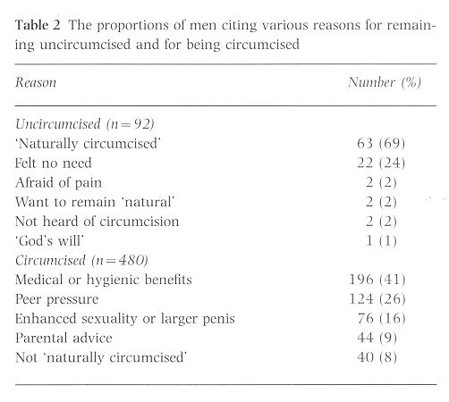

THE CIRCUMCISION REFERENCE LIBRARY
Introduction
About 80% of the world's male population remains uncircumcised: most male circumcision is now practised for religious reasons, largely in Moslem and Jewish communties [1-3]. One major exception is America and it is often assumed that America is the only country where circumcision is practiced for no major religious reason [1-3]. This belief is only partly true, for South Korea probably has the highest circumcision rate among those not Moslem or Jewish. Furthermore, South Korea has possibly the largest absolute number of teenage or adult circumcisions anywhere in the world. At present, South Korea is the only country that practises routine male circumcision among its immediate geographical and cultural neighbours. For instance, the vast majority of the population in Russia, Mongolia, China and Japan do not practise circumcision. (PY Yu, T Ishihara, I Brener, W Shan, private communication).
Throughout their long history, Koreans did not circumcise males until 1945, when Korea gained its independence after 36 years of Japanese occupation. Independence brought trusteeship by the American military in the southern half of the country. Many thousands of American troops were involved in the Korean War, starting from its outbreak in 1950, and remain heavily involved in the military institutions. The present day routine circumcision of teenage and adult males, as well as infant boys in South Korea, has its roots in this American involvement; 1950 can be safely regarded as the year when widescale circumcision started in South Korea.
In this article, preliminary statistics on the rate of circumcision in Korean males of various age groups and the age at which it is practised are reported. The wide range of individual reasons for being circumcised or remaining intact will be reviewed. In addition, the origin of the current situation is investigated by assessing previous Korean studies, recent newspaper articles and textbooks.
Circumcision rates with age
We surveyed the circumcision rate and the time at which the procedure was performed in four different age groups, i.e. group I, 16-29 years old; II, 30-39, III, 40-49, and IV, 50-79. The response sample sizes are shown in Table 1. The survey was concluded largely by the authors, taking the questionnaires to interviewers in the Seoul area (mostly on the street) and concentrating on those aged 16-39 years, for these groups reflect the most recent trend in the circumcision rate. Older groups reflect the situation in the past and from these individuals, the point when Korean circumcision began could be identified. Table 1 shows the circumcision statistics for the four age groups. If those individuals who wish to be circumcised later are included, the rate is as high as 91% in group I. The rate decreases with increasing age and among those 50-79 years old, it is about 50%. The rate of circumcised males plus those who wish to be circumcised later is plotted against the median ages of groups I-IV in Fig. 1. The decrease in circumcision rate with increasing age suggests that circumcision is a recently acquired custom. To investigate this and related issues further, we examined the approximate age at which the operation was performed.
Age at circumcision and the origin of Korean circumcision
Table 1 also shows the results from the survey of circumcised men for their age at operation; while most males in group I were circumcised before age 18, the reverse is true for the remaining groups. In group I, circumcision was carried out at various ages, with a peak during their elementary and middle-school years. Most of the interviewees said that they were circumcised during the summer and winter breaks, mainly because they had to be at home for at least a week after the operation. In addition, the percentage of those circumcised before 18 years old decreases dramatically with increasing age (Fig. 2). Therefore it is likely that most of those in group IV had not heard of circumcision until they were well into adulthood, which again suggests that circumcision is a very recent phenomenon in Korean history. This was verified by interviewing seven men aged 69-79 years; three were circumcised and four were not. All were born and began puberty during Japanese colonial rule, which ended in 1945. None had heard of circumcision during the Japanese occupation or during the American military trusteeship. All became aware of circumcision during or after the Korean War and one was circumcised while serving in the Korean military during his military service in the late 1950s. One 79-year-old man said that although circumcision was first introduced during the Korean war, the main increase occurred during the 1960s when many newspapers published articles about circumcision, largely about its various medical and sexual benefits. For this reason he was circumcised when he at the age of ~48 years after all his children were born.
From the results shown in Table 1 and Figs 1 and 2, aided by interviewing older men, we can conclusively determine the Korean War as the onset of widespread Korean circumcision. As American military personnel were by far the most dominant foreign influence during the Korean War, it can be deduced that the American influence was essential in starting Korean circumcision.
Reasons for remaining uncircumcised: the uniquely Korean concept of 'naturally circumcised"
Because the circumcision rate is so high, especially among younger men, the authors asked uncircumcised males who intended to remain so why they chose that option. Of 571 individuals who were questioned, 92 were in this group; as there was no significant difference between the age groups, these individuals were analysed together. By far the largest proportion (Table 2) said that they were 'naturally circumcised'; one individual felt it was 'God's will' that he should remain uncircumcised, while two reported never hearing of the term circumcision.

The term 'naturally circumcised' features prominently in Korean popular language, but this term might be hard to understand for non-Koreans. There is no medical term that corresponds precisely with this term; its meanings could differ among different individuals using the term. By 'naturally circumcised' a Korean man could be saying any one or several of the following: (i) he does not have 'phimosis'; (ii) he has a relatively short prepuce but not 'phimosis'; (iii) his prepuce is fully retractable when the penis is erect and therefore looks the same as a circumcised penis; (iv) his penis looks more or less the same as a circumcised penis even when not erect. Importantly, the man may not have 'phimosis' but still feel that he is not 'naturally circumcised'. This was verified by interviewing 40 men in their 30s who were circumcised after puberty; none reported having had phimosis, but still decided to be circumcised. While this low rate of phimosis is consistent with the low rate among Japanese males [4], many still felt that their prepuces were too long and therefore not 'naturally circumcised', and thus needed the operation. It is plausible that many of the 22 men who reported that they felt 'no need to be circumcised' also meant that they were 'naturally circumcised'. Therefore many uncircumcised males who wish to remain so feel that they can be classified as 'circumcised' with no need for the operation. The two individuals who preferred to 'remain natural' were probably well informed; both were highly educated and had noticed while living in Europe and Japan, that Europeans and Japanese were uncircumcised. The two who were afraid of pain obviously felt that they needed to be circumcised, but that need was offset by their unwillingness to undergo pain.
Thus we conclude that even among uncircumcised males who would likely remain so, many think that circumcision is still mandatory but that they belong to the statistically few who have very short prepuces, so that they view themselves as 'naturally circumcised'.
Reasons for being circumcised
We asked those who were circumcised (450) or wished to be circumcised later (30, total 480) why they felt that they had to be circumcised; the results are summarized in Table 2. When citing medical or hygienic benefits, they mentioned prevention of cervical cancer in their wives, prevention of sexually transmitted diseases, advantags in penile cleaning, and prevention of premature ejaculation. Therefore, it is clear that some men, when mentioning 'medical benefit' actually mean enhancement of sexuality. Therefore, there could be a significant overlap between 'medical benefits' and 'enhancement of sexualty' as reasons for being circumcised. Note that 'not naturally circumcised' does not mean the presence of phimosis, as discussed previously. Indeed, all 39 men who cited 'not naturally circumcised' said they had fully retractable foreskins. Therefore, what is most likely to be meant by 'not being naturally circumcised' in this case is that they felt that their foreskins are too long. That none of the 39 men who supposedly not 'naturally circumcised' had phimosis is consistent with a previous Korean study that showed only 0.9% of men 19-31 years old had phimosis[5]. Interestingly, the various medical benefits cited by circumcised men largely reproduce the opinions held by some Americans, many of which are now controversial [6] and in some cases possibly invalid (as in the case of premature ejaculation). This again supports our deduction that Korean circumcision originated through American influence.
What the interviewees knew or did not know
We asked some of the interviewees whether they knew that mose of the world's male population remains uncircumcised; of 194 who were asked, only two were vaguely aware of this fact. One had personally witnessed in a Japanese public bathhouse, that Japanese men were not circumcised. Another asked his European friends and was surprised to discover that Europeans are generally not circumcised. All the remaining 192 individuals were very surprised to hear that circumcision is by no means universally practised. They implicitly or explicitly assumed that circumcision is mandatory, and therefore that all the world's male population is circumcised. It is possible that many Korean doctors might share this belief, implicitly or explicitly. For instance, most interviewees received little advice from doctors about whether they should be circumcised. Mot simply visited the doctor's office and underwent surgery. Five interviewees performed the surgery on themselves, using a 'self-operating' circumcision instrument. In addition, we asked those who were aged 16-29 years whether they knew when the Korean practice of circumcision started; none had an answer. Conversely, when we indicated that it could be the onset of the Korean War, most found this conclusion reasonable. Therefore in 50 years, virtually all Koreans have come to believe that circumcision is universally practised throughout the world. This is in sharp contrast to the situation 50 years ago; then none had heard of circumcision, other than in a Biblical context.
Previous studies on Korean circumcision.
There is one previous study by a Korean investigator [5] on male circumcision; we were unable to find any other studies of circumcision published in an international journal ad performed by Korean researchers. The study group in the one known study [5] comprised men 19-31 years old who were examined for military service. At the time of the study (1971) only 5% of the sample group were circumcised. Most of the remaining 95% of uncircumcised males would probably have eventually been circumcised. In addition, 0.9% of this study group had phimosis; this low rate of phimosis is consistent with those of European, Japanese and American studies in adults [4,7-9]. An interesting observation was that of the uncircumcised Korean men, 90% had an abnormal 'redundant prepuce' and therefore required circumcision. Since that study, the term 'redundant prepuce' has been largely replaced in Korean popular language and in medical articles by another term, 'pseudo-phimosis'.
The view in the Korean study [5] is helpful in understanding the meaning of 'naturally circumcised', i.e. that the normal prepuce in uncircumcised men should look similar to circumcised men. According to the study, a 'normal' prepuce implies an extremely short prepuce, which the author claimed occurred in 9.6% of uncircumcised men. Therefore while most of the uncircumcised men who do not have phimosis still need to be circumcised because their prepuces are too long ('redundant' prepuce or pseudo-phimosis), 9.4% have a sufficiently short prepuce to be considered 'normal' and therefore 'naturally circumcised'. With this study in mind, it is perhaps coincidence that ~11% of the present interviewees claim that they are 'naturally circumcised'; this proportion agrees well with the 9.4% quoted in [5].
Another study was conducted by a US military surgeon while stationed in Korea between 1985 and 1987 [10]; this study reported cultural differences between the American soldiers and Korean auxilliaries attached to the US Army (KATUSAS) in their reasons for requesting circumcision. While both groups tended to have similar medical symptoms (or lack thereof), the KATUSAS were more likely to equate circumcision with adulthood, peer pressure, expectation of reduced sexually transmitted diseases and improved sexual satisfaction. This condition is entirely consistent with that discussed previously.
Information from Korean Doctors
As far as we are aware, there has been no article on circumcision written by a Korean doctor and published in an international journal. Thus we must rely largely on articles published by doctors in the lay press to determine their views on circumcision. This attitude apparent in [5], i.e. to classify both the very small percentage of males with phimosis and most of those with normal uncircumcised prepuces as 'abnormal', seems to have changed little over recent years. Therefore, most sources are very much in favor of universal circumcision and the question is not whether a male should be circumcised but when the operation should be performed. For instance a popular textbook [11] states that 'Phimosis or redundant (long) prepuce may cause: (i) penile or cervical cancer, (ii) increased susceptibility to various sexually transmitted diseases; (iii) bad smells in the penis; (iv) premature ejaculation'. While offering no references for the origin of these statements, this text mentions the supposedly lower penile cancer rates in Jews and Moslems compared with Hindus. Most of these beliefs are still held by some Americans. Most are controversial, e.g. the association with cervical cancer [6]. In America, premature ejaculation is seldom if ever mentioned as a justification for circumcision, whereas in Korea, the belief in the enhancement of sexuality through circumcision is very popular, not only among the general public but also apparently in the medical community. A popular Korean website advises, with no reference, that 'nearly all Korean males need circumcision'. The same website states, 'there is no specific age at which circumcision should be performed'. Another popular website advises, with no reference, that 'nearly all Korean males need circumcision'. Another popular website [12] providing sexual education for teenagers states that the best age for circumcision is known to be between 12 and 14 years', again with no reference cited. Yet another site advises parents that 'if a child feels different because he is not circumcised and his friends boast of having a superior penis because of circumcision, it is good to have him circumcised for psychological reasons'. In one widely read Korean encyclopaedia it is stated that 'if prematurely ejaculating, circumcision must be performed' and 'cervical cancer should be prevented through circumcision'. For comparison, a recent edition of the Encyclopaedia Britannica mentions nothing about premature ejaculation or cervical cancer, and states that the practice is in decline even in America.
It is also instructive to consider some of the leading newspaper articles on circumcision. Although these articles might not best reflect the general attitude of the Korean medical community, most are written by popular urologists, or refer to them. These articles no doubt influence popular beliefs about circumcision and therefore warrant consideration, especially because they help to understand why most males choose to be circumcised. Some of these titles are listed in Appendix 1. A relatively liberal position taken by Korean doctors on circumcision can be found in a recent textbook [14] in which the authors state that 'not every male needs to be circumcised'. It is apparent that nearly all textbooks, encyclopaedias and newspaper articles essentially advocate universal or near-universal circumcision, and the debate is about when rather than whether to be circumcised.
It is clear that the beliefs held by the Korean public and medical community were directly influenced by the beliefs of Americans in the past and, to a lesser degree, at present. It is interesting as to why Koreans are circumcised at much later ages, after popular medical advice. At the start of Korean circumcision, nearly all procedures were performed on adults. Therefore, it is possible that simply by habit, the operation is performed mostly on older males and not on infants. Currently, many Korean doctors tend to recommend circumcision mostly at the onset of puberty.
It appears that the recently changing American attitudes toward circumcision have exerted some indirect influence. There are numerous American studies on the pain felt by infants when circumcised and this is a cause for debate. When recommending circumcision at specific ages, Korean doctors routinely cite recent American studies that show that even infants feel the pain. It seems that Koreann doctors recommend circumcision at the onset of puberty because at that age boys tend to accept the procedure as a 'rite of passage'. One recent newspaper article by a urologist states that 'these days, even in America, the neonatal circumcision rate is declining and only about 60% are neonatally circumcised because infants also feel pain'. This urologist goes on to recommend near universal circumcision at the onset of puberty. However, it is possible that this doctor assumed that most of the uncircumcised American infants would later be circumcised. This assumption goes against the present American situation where the decision about circumcision is made primarily at birth and not later.
Conclusion
Most Korean males are circumcised not in infancy but at puberty, as teenagers or in their 20s. There are several unique characteristics in Korean circumcision, of which the world medical community seems to be largely unaware. They are: (i) it is a custom recently acquired through contact with Americans, and no older than 50 years; (ii) during this relatively short time, most Korean males were circumcised and for those in their 20s, the circumcision rate is now >90%; (iii) unlike in America, it is seldom practised in infancy; (iv) the current situation occurred with little open debate and the decision to be circumcised; (v) while circumcision in Korea has no religious background, it is nevertheless practised during adolescence, largely initiated by peer pressure. Therefore, it has partly become a 'rite of passage' and is fully integrated into present Korea culture; (vi) the medical justification offered by doctors seems to be acquired from the initial contact with the American practices of circumcision and therefore largely reproduce previous, now controversial, American beliefs; (vii) it appears that the recent decrease in American circumcision is being interpreted by some of the South Korean medical community as universally recommending a later procedure.
Finally, although the subjects interviewed were exclusively from the Seoul area, most of the present population of Seoul was born outside of the city. As Seoul is very metropolitan the population sampled probable reflects the general trend in the rest of Korea. A more extensive and detailed study of the circumcision rate at various ages, the regional and educational differences, etc., is being undertaken by the authors.
Acknowledgements
The authors thank R. Stuart, G.C. Denniston, M.F. Milos and G.N. Weiss for helpful discussions. This work was partially supported by the Lotte Fellowship.
References
Authors
D.S. Kim, J.Y. Lee
M.G. Pang.
Correspondence: D.S. Kim, Department of Physics, Seoul
National University, Seoul 151-742, Korea.
Email: denny@phya.snu.ac.kr
Appendix 1
Titles of articles about circumcision,
published recently in leading Korean newspapers.
Circumcision should be performed around 12 years of
age
(HankKyeoRae Shinmun, June 16, 1997)
Correction of false teeth, circumcison, removal of warts
and acne are best performed at the winter breaks
(Dong A Ilbo, Dec. 21, 1996)
My 70-year-old patient who was circumcised
(Kukmin Ilbo, Sep. 24 1996); in this article the urologist
mentions that the man wished to be circumcised so that his
children would not be embarrasesed when the performed the
ritual bath upon his death!
Danger!: Self-Operating Circumcision Machine
(SeGye Ilbo, August 15, 1996)
The time to be circumcised: Is it when a baby is born, or
is it around 10 years of age? Medical Community sharply
divided.
(Segye Ilbo, Aus. 12, 1995)
Premature Ejaculation (states that 'phimosis or long
prepuce causes premature ejaculation')
Cervical Cancer: A cancer of environment
(KyungHyang Shinmun, Oct. 9, 1995): states 'the probability
of getting cervical cancer is enhanced when having sex with
uncircumcised males'. In the same article, it is stated that
to prevent cervical cancer, the male partner must be
circumcised.
http://www.cirp.org/library/cultural/kim1/